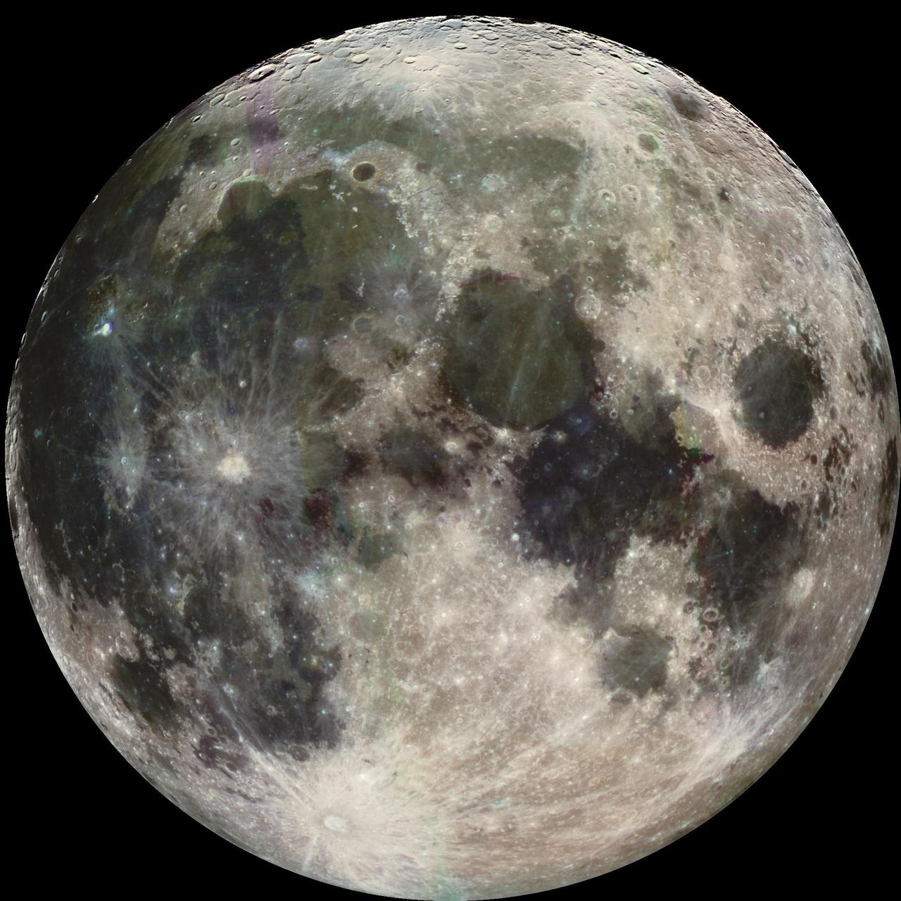

Earthrise, seen from lunar orbit
Photo: NASA, Apollo 11
From the Moon's orbit, Earth climbs over the grey horizon every two hours or so. The astronauts who first saw it said it was the most beautiful sight of the whole journey: a small blue world, wrapped in cloud, hanging in black.
The far side of the Moon never faces us. Its surface is older and more heavily cratered than the side we see, with fewer of the dark lava plains that make the familiar face.

Those plains, the maria, formed when lava flooded ancient impact basins more than three billion years ago. Early astronomers took them for seas, and the names stuck.
Today, orbiters map the Moon in more detail than many parts of Earth, and new missions plan to return people to its surface.